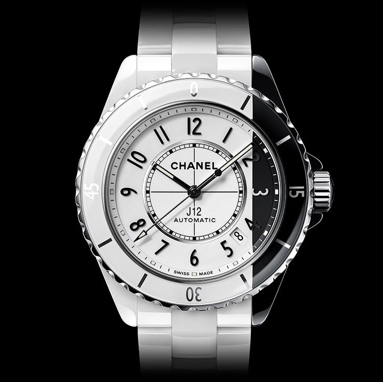
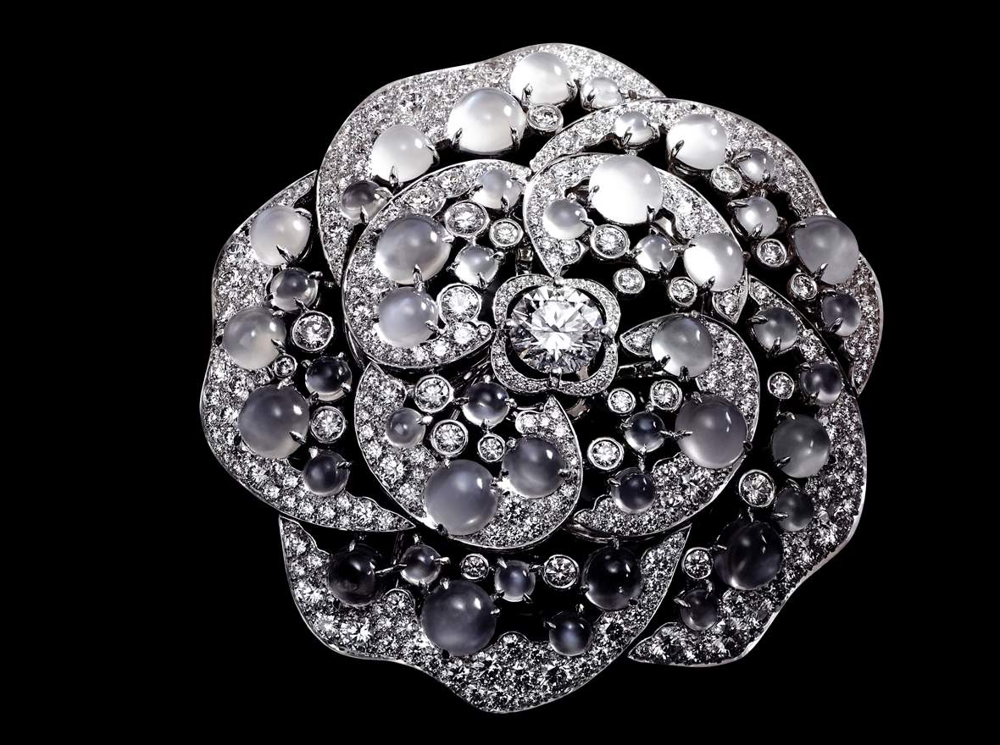
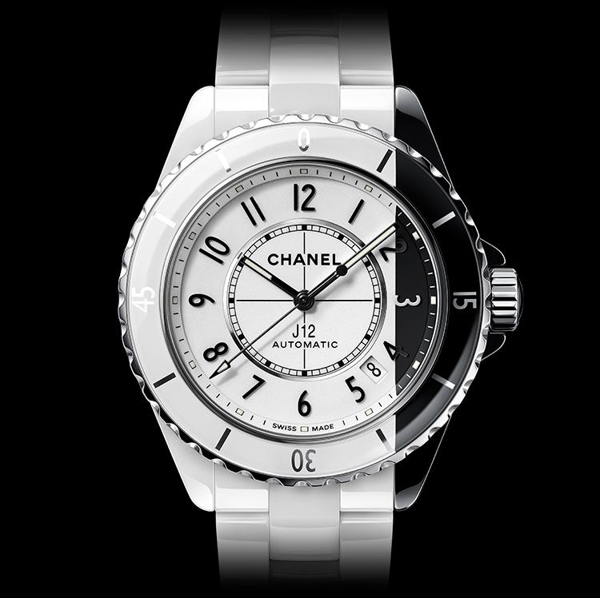
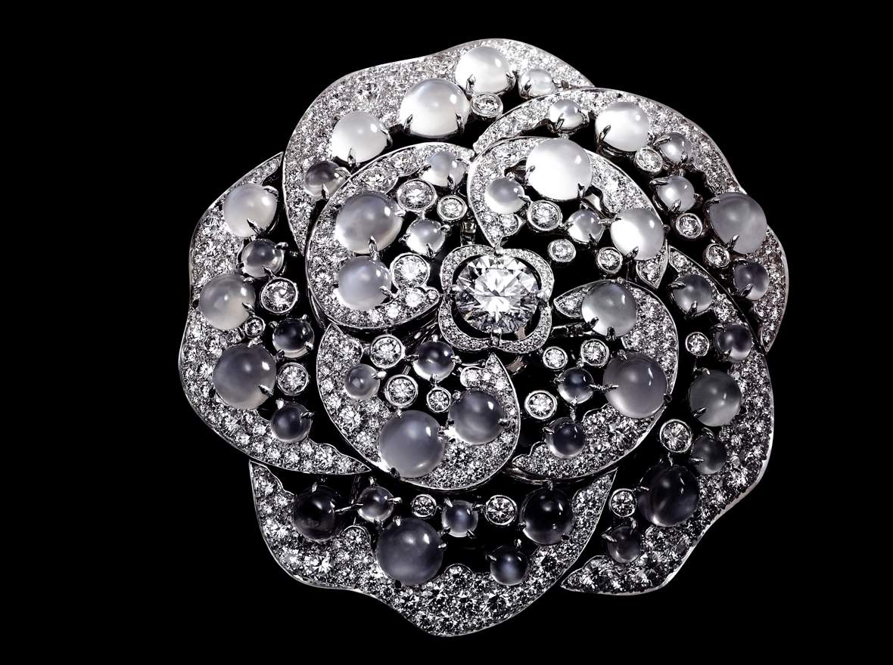
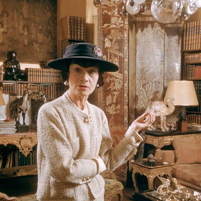

Home
CHANEL é uma empresa privada francesa que pertence a Alain e Gerard Wertheimer, netos de Pierre Werthimer, que foi um parceiro de negócio da couturière Gabrielle Bonheur Chanel. A Chanel S.A. é uma empresa especializada em alta-costura, pret-à-porter, bens de luxo e acessórios de moda.
•Origem: Francesa
•Fundação: 1909
•Fundador: Coco Chanel
•Sede Mundial: Paris, França
•Proprietário da marca: Chanel S.A.
•Chairman: Alain Wertheimer
•Presidente: Bruno Pavolvsky
•Estilista: Karl Lagerfeld
•Lojas: + 310
•Segmento: Moda de luxo

Produtos
Acessorios
 



Sobre
A era de Gabrielle Chanel (1883-1971) na empresa é, com certeza, a mais memorável
marcada pelos vestidos caros e estilosos que revolucionaram a indústria da moda mundial
repletos de originalidade. Desde o início Coco Chanel ocupava o cargo de Designer Chefe até
o seu falecimento em 10 de janeiro de 1971.
A ligação de Chanel com o mundo da moda começou em 1910, em Deauville, onde passou
a trabalhar em uma loja de chapéus. Coco, maneira como era chamada pelos – poucos –
amigos, criou os alicerces de uma elegância feminina única, ao longo de uma vida em que o
trabalho sempre ocupou o lugar principal.
O estilo do século 20, no que teve de mais funcional, feminino – sem os exageros que o
conceito costuma trazer – e no que teve de absolutamente, irremediavelmente elegante,
levou a assinatura de Chanel. Em quatro anos, já era dona de duas lojas do gênero, uma na
mesma cidade de Deauville, outra em Paris. Além dos chapéus, as primeiras roupas
concebidas por ela começavam a aparecer, desde o início revelando aqueles que seriam os
traços marcantes em todas as suas criações: a simplicidade e o conforto. Assim, foram
surgindo vestidos chemisiers soltos, amplos cardigãs, peças em jérsei – tecido que até então
só era utilizado na confecção de roupas íntimas – e twinsets que o tempo se encarregaria de
elevar ao patamar de clássicos.
